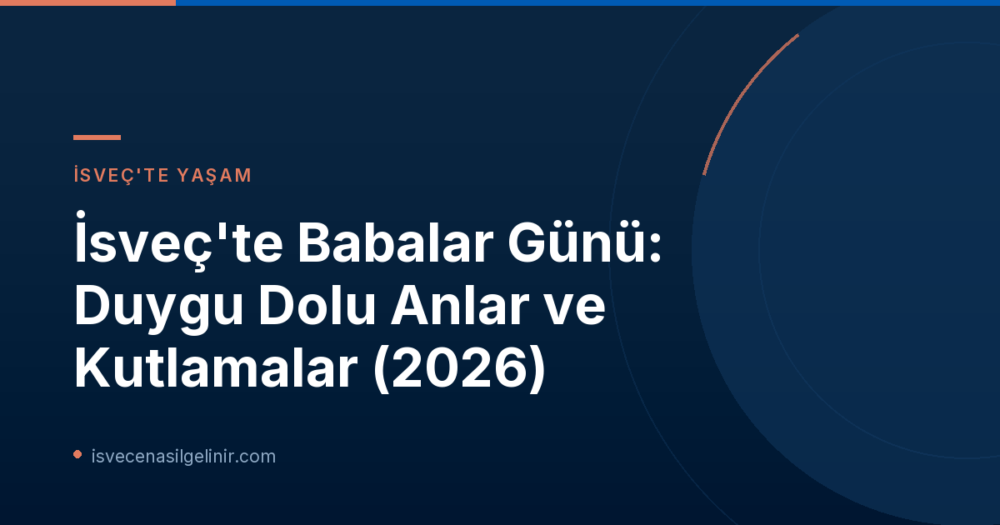

İsveç'te Babalar Günü'nün Tarihi ve Anlamı
İsveç'te Babalar Günü geleneği, Amerika Birleşik Devletleri'nden esinlenerek 1930'lu yıllarda başladı. Başlangıçta Mayıs ayında kutlansa da, anneler günü ile çakışmaması ve ticari kaygılarla birlikte 1949'dan itibaren Kasım ayının ikinci Pazar günü olarak belirlendi. Bu tarih, sonbaharın ortasında, ailelerin bir araya gelmesi ve babalarını onurlandırması için sıcak bir fırsat sunar. İsveçliler için Babalar Günü, babalarına olan sevgilerini, minnetlerini ve takdirlerini göstermenin, bazen küçük bir hediye, bazen de sadece içten bir teşekkürle ifade etmenin bir yoludur.Duygusal Mesajlar ve Anılar: SVT Sohbet Odasından Yansımalar
SVT Nyheter Inrikes'in "Babalar Günü mesajınızı buraya gönderin!" başlıklı sohbet odası, bu özel günün duygusal yoğunluğunu gözler önüne serdi. Marita gibi birçok kişi, vefat etmiş babalarına olan özlemlerini dile getirdi. "Sevgili babam ♥️ Çok erken uykuya daldın ve seni özlüyorum; gülüşünü, mizahını ve komik huylarını," diyen Marita'nın mesajı, birçok kişinin kalbine dokundu. Aynı şekilde Anton da Şubat ayında kaybettiği babası Anders'i anarak, onun ne kadar düşünceli, nazik ve eğlenceli olduğunu vurguladı. Bu mesajlar, babaların hayatımızdaki silinmez izlerini ve onların anılarının ne denli değerli olduğunu gösteriyor. Diğer yandan, bazı katılımcılar yaşayan babalarına olan sevgilerini ve minnetlerini dile getirdi. "Irkçılığı Durdur" adlı bir kullanıcı, babasına en iyi Babalar Günü'nü dilerken, Björn Hansen ve Mia gibi isimler de "İyi ki doğdun sevgili babam, seni çok özledim. Düşüncelerimde hep varsın," gibi içten mesajlar paylaştı.İsveç'te Babalar Günü Geleneği
- **Kutlama Tarihi:** Kasım ayının ikinci Pazar günü (2026'da 8 Kasım).
- **Kökeni:** 1930'larda ABD'den esinlenerek başladı.
- **Kutlama Şekli:** Genellikle küçük hediyeler, özel yemekler, kartlar ve duygusal mesajlarla babalar onurlandırılır.
- **Amaç:** Babalara duyulan sevgi, minnet ve takdiri ifade etmek.
Babalar: Hayatımızdaki Güven ve Rehber
Eva'nın "Sevgili babam. Annemle sen çocukluğumun ve gençliğimin güvencesiydiniz," sözleri, birçok çocuk için babanın ne anlama geldiğini özetliyor. Babalar, genellikle aile içinde bir dayanak noktası, bir rehber ve güven veren bir limandır. Allan'ın mesajında belirttiği gibi, babaların yaşam mücadelesi ve fedakarlıkları, çocuklarının daha iyi bir hayata sahip olmasını sağlamıştır. "Babacığım, mutlu Babalar Günü, bazen hayatımın seninkine kıyasla ne kadar kolay olduğunu düşününce gözlerim doluyor," diyen Allan, babasının zorluklarla dolu hayatının kendi yaşamını nasıl şekillendirdiğini ve ona nasıl bir miras bıraktığını ifade etti. Bu mesajlar, İsveç'teki Babalar Günü'nün sadece bir kutlama değil, aynı zamanda babaların toplumsal ve ailevi rolleri üzerine derin düşüncelere sevk eden bir gün olduğunu gösteriyor. Onların emekleri, sevgileri ve rehberlikleri, nesiller boyu aktarılan değerli bir mirastır.İsveç'te Babalar Günü'nün Önemi
İsveç'in modern toplum yapısında bile Babalar Günü gibi geleneksel kutlamalar, aile bağlarının güçlendirilmesi ve bireylerin birbirlerine olan bağlılıklarını ifade etmeleri için önemli bir platform sunar. Bu gün, yoğun tempolu hayatlarımızda durup, babalarımızın fedakarlıklarını ve bize kattıklarını hatırlamak için bir fırsattır. İster hayatta olsunlar ister anılarıyla yaşasınlar, babalarımız her zaman kalbimizde özel bir yer tutar. Onlara duyduğumuz sevgi ve saygıyı ifade etmek, bu özel günün en temel anlamıdır.Referanslar:
- SVT Nyheter Inrikes: Chatt: Skicka din fars dag-hälsning här!
- İsveç Vatandaşlık Sınavı: sverigemedborgarskapsprov.com
İsveç'teki Yaşam ve Vatandaşlık Süreçleri Hakkında Merak Ettikleriniz mi Var?
İsveç'e göçmenlik, çalışma veya eğitim süreçleri hakkında detaylı bilgilere mi ihtiyacınız var? Veya İsveç vatandaşlık testine nasıl hazırlanacağınızı mı merak ediyorsunuz? Tüm sorularınız için kapsamlı rehberlerimize göz atın!